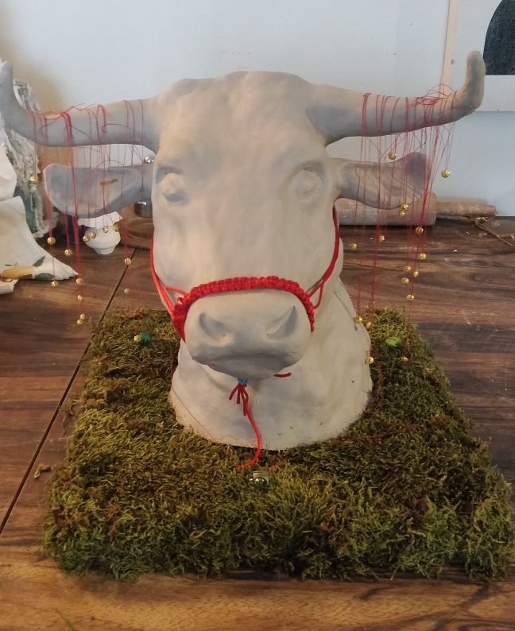
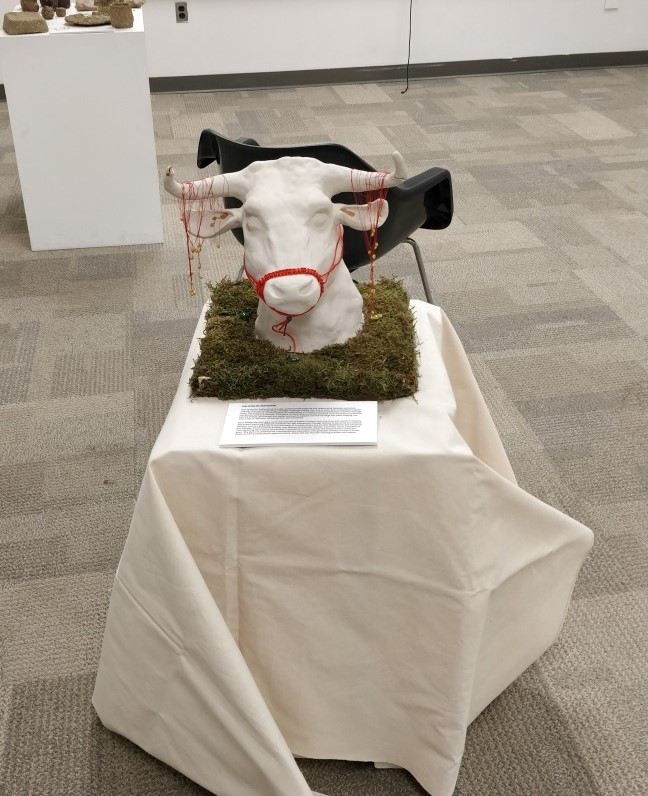

Planting trees in Rouge Urban National Park. Helping reforestation and beautifying the landscape.
Engaged in weekly skill-building workshops, built tree identification skills through Tree Tenders training program, development of an Urban Forest Stewardship Action Plan, facilitated community engagement through promoting and presenting online educational webinars, conducted neighbourhood tree inventories and assessments.
Year of the Ox: Self-portrait is a clay sculpture created for a class in Cultural and Artistic Practices for Environmental and Social Justice at York University. It was chosen as one of the finalists to be displayed at York University during their Eco-Arts Festival in 2022. It explores the relationship between personal, cultural, and animal identities. Through molding of white clay into an oxen embedded in green moss, the sculpture communicates the celebration of Chinese cultural symbolism and how it can ground personal identity. This piece incorporates numerous symbols from the artist's childhood like red thread, gold beads and zodiac animals to explore how heritage promotes healing but is also a site of rejection, disconnection, and confusion.
 